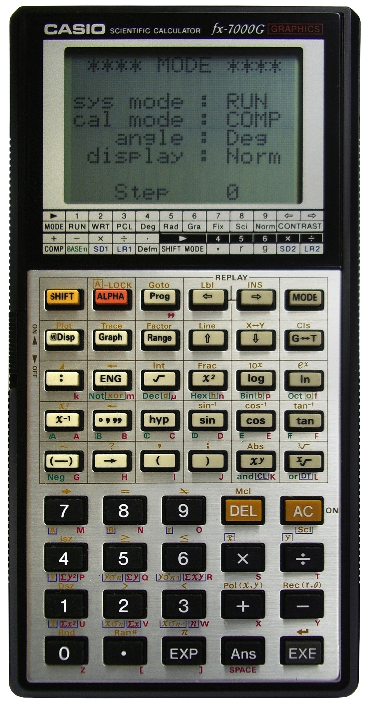
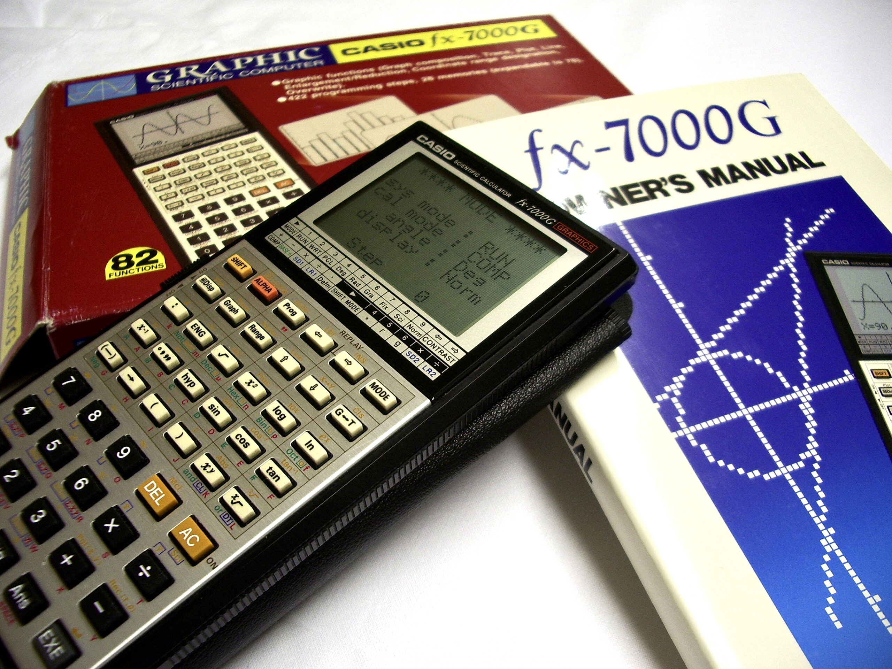

Casio FX-7000G Graphing Calculator
The first graphing calculator — a pocket number-slab whose 96×64 dot-matrix display becomes a drawing surface that plots your functions

Overview
The Casio FX-7000G, introduced in 1985 and manufactured until c. 1989, is widely recognized as the world's first graphing calculator available to the public. Its defining feature is a 96×64-pixel dot-matrix LCD (16 characters × 8 lines in character mode) that can display built-in and user-defined function graphs, statistical graphs, bar graphs, line graphs, normal-distribution curves, and regression lines. The interaction is a paradigm shift: the calculator's display becomes a drawing surface, letting the user see a function as a curve instead of a string of evaluated points.
The FX-7000G is also programmable, holding 422 bytes of program memory in up to ten slots, using a tokenized programming language (like the earlier FX-602P) that minimizes memory footprint — characters and symbols stand in for longer code lines so longer programs fit. It has 26 numeric memories standard, expandable to 78 by trading program bytes. It offers 82 scientific functions at up to 13 digits of precision, including binary/octal/hex conversions and statistical graphing.
The hardware is a black-cased handheld, ~165×89×15 mm, ~155 g, powered by three CR2032 lithium cells (about 120 hours of battery life, no AC adapter). The 1985 unit was followed by the FX-7000GA in 1990. The FX-7000G marks the point where the pocket calculator starts to draw — a direct line from numeric LED/7-seg readouts to the graphical, visual interfaces that followed.
Deep dive
Before the FX-7000G, a calculator answered with a number on a character or 7-segment readout. The FX-7000G's dot-matrix LCD turns the whole face into a coordinate surface where a function is rendered as a curve you can examine. Statistical graphing (bar, line, normal-distribution, regression) extends this to data. This is the moment the calculator stops being a clerk that returns an answer and becomes an instrument that shows you a picture — the same idea, in miniature, as the shift to graphical screens elsewhere.
Its 422 bytes of program memory force an economy: programs are written in a tokenized language where a character or symbol represents a whole command, so more logic fits. The manual's programming catalog is written in these symbols. This is memory-constrained programming as interface — squeezing an interactive routine into less than half a kilobyte.
The FX-7000G is the direct ancestor of every graphing calculator since — the TI-81, TI-82/83, Casio's own fx-9850/fx-9860 series, and the CAS models that followed. It marks the point where the calculator, already a pervasive personal computer, gains a graphical, visual interaction channel. The FX-7000GA (1990) refined the concept.
Where the museum's TI-59 is a programmable numeric calculator with a 7-seg display, the FX-7000G adds a genuinely new interaction model: the machine draws a picture the user inspects. It extends the "machine that shows you a shape" thread begun by the Tektronix 7854 waveform scope to the pocket device.
Team & pioneers
- Casio Computer Co. Manufacturer; introduced the world's first public graphing calculator.
Media
